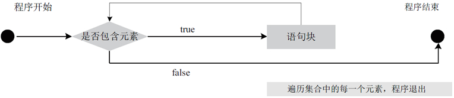

首页 > Java教程 > Java流程控制语句
Java foreach语句的用法
foreach 循环语句是 Java 1.5 的新特征之一，在遍历数组、集合方面，foreach 为开发者提供了极大的方便。foreach 循环语句是 for 语句的特殊简化版本，主要用于执行遍历功能的循环。
foreach 循环语句的语法格式如下：
关于数组集合会在教程后面详细介绍，这里我们只需要大概了解就可以。numbers.length 是获得数组的长度，length 是数组的属性，numbers[i] 是通过数组下标访问数组元素。
那么采用 for-each 循环语句遍历数组的方式如下：
foreach 循环和普通循环不同的是，它无须循环条件，无须循环迭代语句，这些部分都由系统来完成，foreach 循环自动迭代数组的每个元素，当每个元素都被迭代一次后，foreach 循环自动结束。
当使用 foreach 循环来迭代输出数组元素或集合元素时，通常不要对循环变量进行赋值，虽然这种赋值在语法上是允许的，但没有太大的实际意义，而且极容易引起错误。例如下面程序。
不难看出，当使用 foreach 来迭代访问数组元素时，foreach 中的循环变量相当于一个临时变量，系统会把数组元素依次赋给这个临时变量，而这个临时变量并不是数组元素，它只是保存了数组元素的值。因此，如果希望改变数组元素的值，则不能使用这种 foreach 循环。
使用 foreach 循环迭代数组元素时，并不能改变数组元素的值，因此不要对 foreach 的循环变量进行赋值。
foreach 语句的实现代码如下：
该程序运行后的结果如下所示。
foreach 循环语句的语法格式如下：
for(类型 变量名:集合) {
语句块;
}
其中，“类型”为集合元素的类型，“变量名”表示集合中的每一个元素，“集合”是被遍历的集合对象或数组。每执行一次循环语句，循环变量就读取集合中的一个元素，其执行流程如图 1 所示。

图 1 foreach 循环语句的执行流程图
图 1 foreach 循环语句的执行流程图
例 1
假设有一个数组，采用 for 语句遍历数组的方式如下：
// 声明并初始化数组
int[] numbers = { 43, 32, 53, 54, 75, 7, 10 };
System.out.println("----for----");
// for语句
for (int i = 0; i < numbers.length; i++) {
System.out.println("Count is:" + numbers[i]);
}
上述第 2 行语句声明并初始化了 7 个元素数组集合，目前大家只需要知道当初始化数组时，要把相同类型的元素放到 {…} 中并且用逗号分隔（,）即可。关于数组集合会在教程后面详细介绍，这里我们只需要大概了解就可以。numbers.length 是获得数组的长度，length 是数组的属性，numbers[i] 是通过数组下标访问数组元素。
那么采用 for-each 循环语句遍历数组的方式如下：
// 声明并初始化int数组
int[] numbers = { 43, 32, 53, 54, 75, 7, 10 };
System.out.println("----for each----");
// for-each语句
for (int item : numbers) {
System.out.println("Count is:" + item);
}
从示例中可以发现，item 不是循环变量，它保存了集合中的元素，for-each 语句将集合中的元素一一取出来，并保存到 item 中，这个过程中不需要使用循环变量，通过数组下标访问数组中的元素。可见 for-each 语句在遍历集合的时候要简单方便得多。例 2
String[] urls = { "http://c.biancheng.net/java", "http://c.biancheng.net/c", "http://c.biancheng.net/golang/" };
// 使用foreach循环来遍历数组元素
// 其中book将会自动迭代每个数组元素
for (String url : urls) {
System.out.println(url);
}
从上面程序可以看出，使用 foreach 循环遍历数组元素时无须获得数组长度，也无须根据索引来访问数组元素。foreach 循环和普通循环不同的是，它无须循环条件，无须循环迭代语句，这些部分都由系统来完成，foreach 循环自动迭代数组的每个元素，当每个元素都被迭代一次后，foreach 循环自动结束。
当使用 foreach 循环来迭代输出数组元素或集合元素时，通常不要对循环变量进行赋值，虽然这种赋值在语法上是允许的，但没有太大的实际意义，而且极容易引起错误。例如下面程序。
String[] urls = { "http://c.biancheng.net/java", "http://c.biancheng.net/c", "http://c.biancheng.net/golang/" };
// 使用foreach循环来遍历数组元素，其中 book 将会自动迭代每个数组元素
for (String url : urls) {
url = "https://c.biancheng.net";
System.out.println(url);
}
System.out.println(urls[0]);
运行上边程序，将看到如下结果：
https://c.biancheng.net
https://c.biancheng.net
https://c.biancheng.net
https://c.biancheng.net/java
不难看出，当使用 foreach 来迭代访问数组元素时，foreach 中的循环变量相当于一个临时变量，系统会把数组元素依次赋给这个临时变量，而这个临时变量并不是数组元素，它只是保存了数组元素的值。因此，如果希望改变数组元素的值，则不能使用这种 foreach 循环。
使用 foreach 循环迭代数组元素时，并不能改变数组元素的值，因此不要对 foreach 的循环变量进行赋值。
例 3
在一个字符串数组中存储了几种编程语言，现在将这些编程语言遍历输出。foreach 语句的实现代码如下：
public static void main(String[] args) {
String[] languages={"Java","ASP.NET","Python","C#","PHP"};
System.out.println("现在流行的编程语言有：");
// 使用 foreach 循环语句遍历数组
for(String lang:languages) {
System.out.println(lang);
}
}
在循环体执行的过程中，每循环一次，会将 languages 数组中的一个元素赋值给 lang 变量，直到遍历 languages 数组中所有元素，循环终止。该程序运行后的结果如下所示。
现在流行的编程语言有： Java ASP.NET Python C# PHP
关注公众号「站长严长生」，在手机上阅读所有教程，随时随地都能学习。内含一款搜索神器，免费下载全网书籍和视频。

微信扫码关注公众号